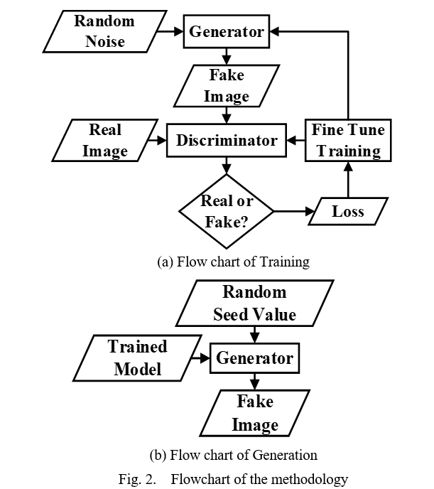

ICICT4SD 2023 · Dhaka · pp. 341–345
Training StyleGAN2 on BWW-Texture Dataset: Generating Textures Through Transfer Learning
Abstract
Texture synthesis is a challenging problem in computer vision that aims to generate realistic and diverse images of surface patterns for applications like game development and 3D rendering. Existing methods often suffer from limitations such as low resolution, lack of details, unnatural artifacts, and inability to capture complex and periodic patterns. In this paper, we investigate each of these obstacles in a novel application of StyleGAN2-ADA, a state-of- the-art generative adversarial network (GAN), to a proprietary custom dataset (BWW-Texture) for synthesizing high-quality textures. We create a large and comprehensive dataset of texture images from three categories: wood, brick wall, and plastered wall. We train StyleGAN2-ADA on our dataset using transfer learning techniques from a pre-trained model on human faces (FFHQ). We evaluate the quality of the generated textures using a user study. Our model outperformed two popular text-based image generators: Dall.E 2 and Stable Diffusion 2.1. We also demonstrate the practicality of our model by using the generated textures in 3D graphics software.
Keywords
Texture synthesis; StyleGAN2-ADA; generative adversarial networks; transfer learning; 3D graphics.
